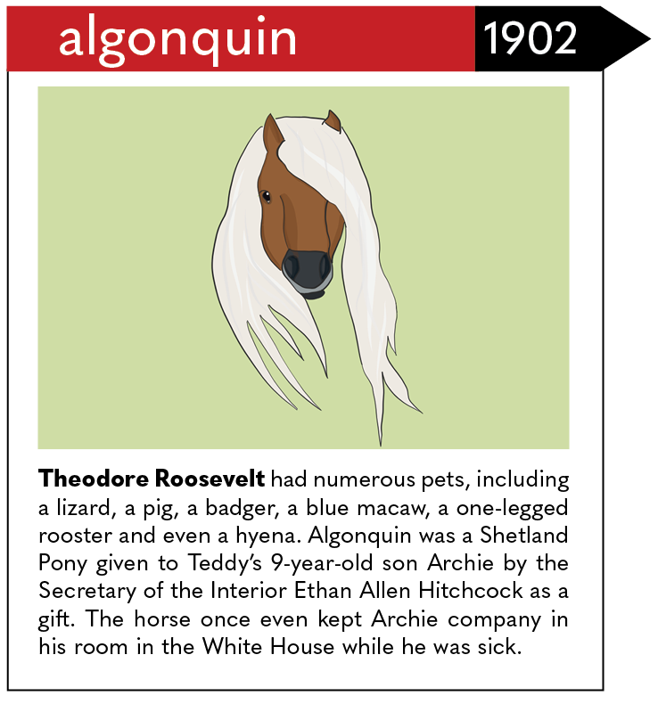

WHO LET THE DOGS OUT?
A History of Prominent Presidential Pets
Written by
Jimmy He
Web design and development by
Olivia Lloyd
Illustrations by Giovana Gelhoren, Kylie Lin, Angeli Mittal and Meher Yeda

![Arguably one of the most famous presidential pets of all time, Millie the English Springer Spaniel remains the only pet to have lived in the White House through two presidencies, those of George H. W. Bush and George W. Bush. She’s also the author of “Millie’s Book: As Dictated to Barbara Bush,” which details a day in her life with the president and the first lady. The Hill reported that George H. W. Bush was worried about the weight of his English Springer Spaniel named Ranger, prompting him to write a letter to White House staff asking offices to pledge not to feed Ranger and for Ranger to wear a “Do not feed me” badge along with his ID.](millie-and-ranger.png)
![“We did get something, a gift, after the election ... It was a little cocker spaniel dog in a crate that he’d sent all the way from Texas, black and white, spotted. And our little girl Tricia, the 6-year-old, named it Checkers … Regardless of what they say about it, we’re gonna keep it.” In what is now known as the “Checkers Speech,” Richard Nixon introduced to the nation the one political gift he would keep: his new dog. In the same speech, he vehemently denied accusations of using a secret campaign trust fund to fund his political expenses. Checkers never actually lived in the White House because Nixon only had her while he was senator and vice president.](checkers.png)